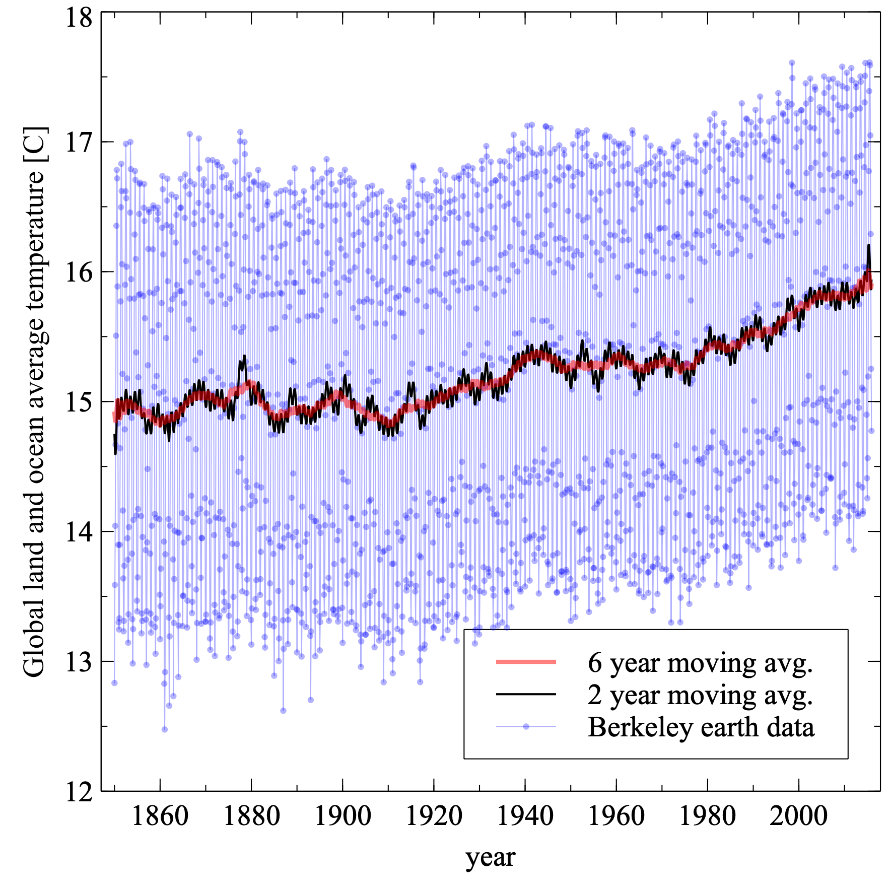

Exercises#
We understand all students will have very diverse backgrounds when it comes to computing. From some that are doing any of these things for the first time to some with extensive backgrounds in computing. Consider these exercises here as a check on how much you know already and if it is easy for you try to consider it as an opportunity to practice getting the job done faster, more elegantly, and also as a chance to engage with the material.
Make a figure#
Using your favorite software make a figure like the one below.
The data is in comma separated form and comes from the Berkley Earth project.
Submit the .pdf of the figure and a paragraph describing how you made it and provide detailed instructions of how we can reproduce it.

#
Plot a one dimensional function#
Let’s use pythons matplotlib library to plot the function
$\( \sqrt{x^5+e^{x/5}} \)$ .